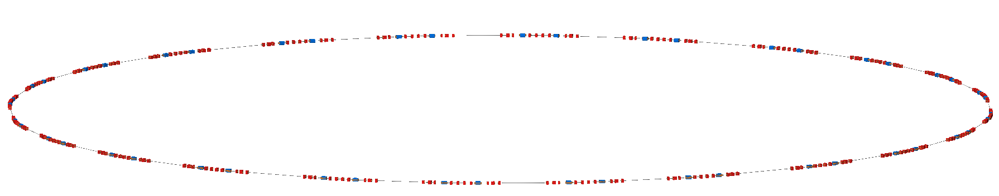
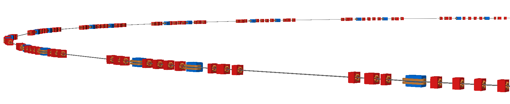

Diamond Light Soruce
The Diamond Light Source at Rutherford Appleton laboratory in Oxford, UK. The model is of the 560m storage ring. The model was prepared from a MADX job where the sextupoles throughout the lattice were treated as thin sextupoles. The Twiss table output in TFS format is included with this example and compressed for convenience (pybdsim and pymadx both work with compressed files).
The BDSIM model provided was converted directly without modification.
Note
This is a cirular machine and should be executed with the
--circular option to control the number of turns the
particls will take.
Example:
bdsim --file=dia-nlsige.gmad --batch --circular --ngenerate=1000
This will run 1000 particles with a maximum of 1 turn. Below are sample visualisations and the beam size and dispersion as calculated using rebdsimOptics and comparison with pybdsim.
{kind=link}

The full machine as visualised with BDSIM.
{kind=link}

Part of the machine visualised with perspective.
The beam size in horizontal and vertical throughout a single turn of the ring with 5000 particles. Particles tracked in BDSIM, sizes calculated with rebdsimOptics and comparison with pybdsim.
The dispersion in both horizontal and dispersion throughout a single turn of the ring with 5000 particles. Particles tracked in BDSIM, sizes calcualted with rebdsimOptics and comparison with pybdsim.